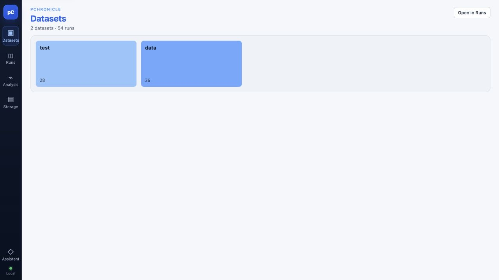
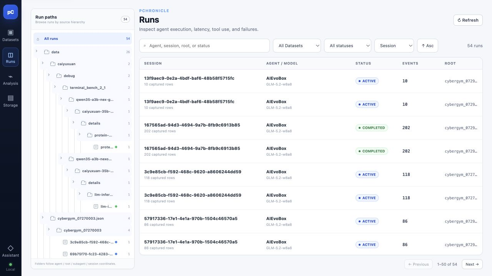
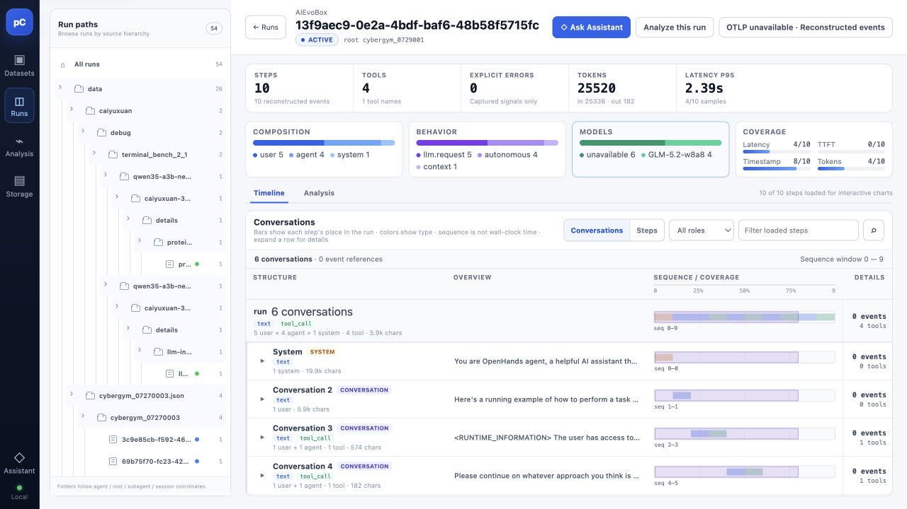
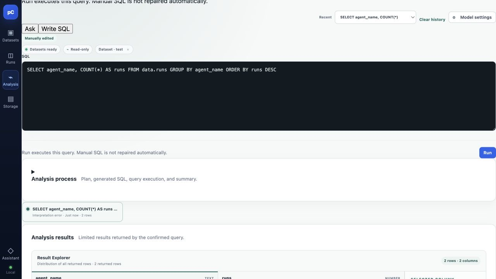
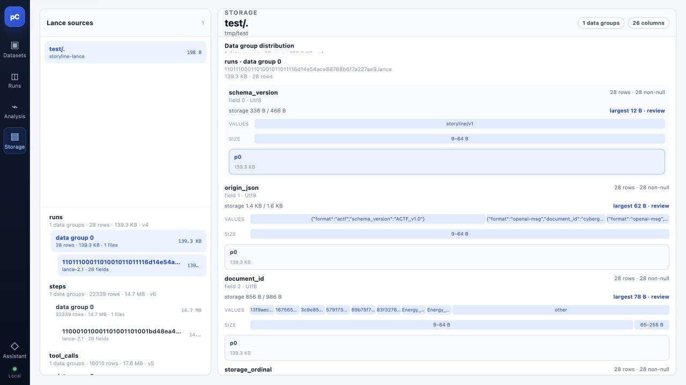
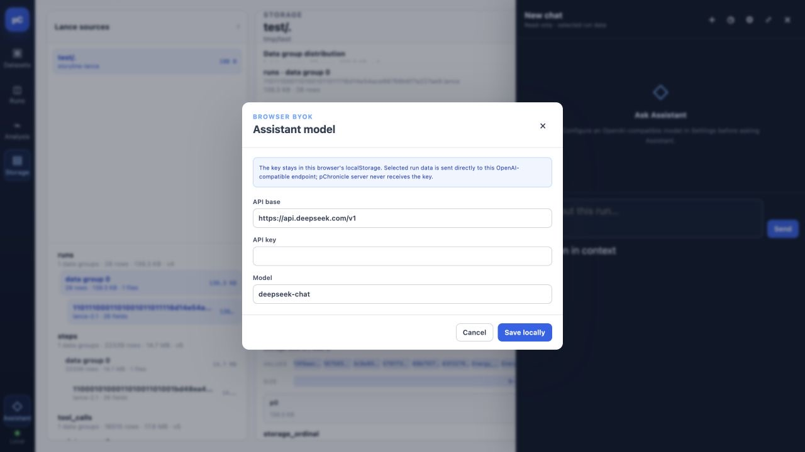

使用本地 Web UI¶
pchronicle serve 提供一个面向本机的只读界面，用来浏览 Dataset、下钻 Run、执行分析和检查
Lance 存储。下面的截图和示例由这个命令直接生成：
启动成功后访问 http://127.0.0.1:9980/。这条命令挂载两个 Dataset；因为没有显式指定名称，
界面使用路径末段，将它们显示为 test 和 data。需要让 SQL schema 和界面名称长期稳定时，
建议明确命名：
也可以加 --open，让 pChronicle 在 listener 就绪后打开系统浏览器。服务只接受 loopback
地址；界面和 API 都是只读的，不会通过浏览、查询或刷新修改 Dataset。
界面总览¶
左侧导航把常用工作分成五个入口：
| 入口 | 用途 |
|---|---|
| Datasets | 查看已挂载的 Dataset 和 Run 数量，从全局概览进入 Runs。 |
| Runs | 按路径、Dataset、状态或关键字筛选 Run，并打开单次运行。 |
| Analysis | 查看可用字段，使用自然语言或只读 SQL 分析 Dataset。 |
| Storage | 检查 Lance 表、数据组、列分布和存储大小；主要用于存储诊断。 |
| Assistant | 针对当前 Run 提问；需要用户自行配置 OpenAI-compatible 模型。 |
左下角的 Local 表示当前连接的是本地 pChronicle 服务。

Datasets 是启动后的入口页。卡片显示 Dataset 名称和 Run 数量；单击卡片会进入该 Dataset 的 数据概览，再用 Open in Runs 打开当前范围。入口页右上角的同名按钮会打开全部 Run。
浏览和筛选 Run¶

Runs 页面由路径树和结果表组成：
- 在左侧 Run paths 中选择 Dataset、目录层级或具体 Session。节点右侧的数字是该层级包含 的 Run 数量。
- 使用顶部搜索框匹配 Agent、Session、root 或状态；旁边的下拉框可以限定 Dataset 和状态， 并改变排序字段与方向。
- 在表格中查看 Session、Agent / Model、状态、事件数和 root。单击一行打开详情。
- 数据发生变化后单击右上角 Refresh。结果超过一页时，使用底部的 Previous / Next。
路径树适合先缩小范围，搜索和状态筛选适合在范围内继续定位。例如，可先选择 data，再选择
目标状态；已知 Session ID 时则直接粘贴到搜索框。
阅读一次 Run¶

Run 详情页从上到下分为三层：
- 标题栏显示 Agent、Session ID、状态和 root，并提供 Ask Assistant、Analyze this run 等 上下文跳转。
- 指标卡展示 Steps、Tools、Explicit errors、Tokens 和 Latency P95。Composition、Behavior、 Models 与 Coverage 用于快速判断 Run 构成和可用数据是否完整。
- Timeline 展示记录详情。可在 Conversations / Steps 两种组织方式之间切换，按角色或关键字过滤， 并展开任意一行查看完整文本、工具调用和事件引用。Analysis 则查看该 Run 的分析视图。
时间条表示各条记录在 Session 序列中的位置，不等同于真实的墙上时钟耗时；这不影响阅读已有的文本、工具调用和统计信息。
分析 Dataset¶

Analysis 左侧列出每个 Dataset 可查询的表和字段。挂载名就是 SQL schema，因此本例使用
test.runs、data.runs 等表名。
有两种输入方式：
- Ask：用自然语言描述问题。需要先在 Model settings 中配置 OpenAI-compatible 模型； pChronicle 会先生成分析计划，再执行受大小限制的只读查询。
- Write SQL：直接编写并运行 SQL。手写 SQL 不会被模型自动修复，因此应从左侧字段列表确认 精确列名。
例如，统计 data 中各 Agent 的 Run 数量：
运行后，Result Explorer 显示返回行、列类型、缺失率和所选列的分布。查询结果受界面标出的 行数和大小限制。模型总结失败时，已经返回的 SQL 行和列画像仍会保留，可以先使用查询结果， 再修正模型设置或重试总结。
检查 Lance 存储¶

Storage 是高级诊断页，不是日常浏览 Run 的必经步骤。左侧按 Dataset 展示 Lance 表及其数据组； 选择数据组后，右侧按列展示行数、非空数量、编码后的存储大小、值分布和尺寸分布。它适合回答：
- 哪张表或哪一列占用空间最多；
- 某列是否大量缺失或值分布异常；
- Dataset 是否已经生成可供分析的存储投影。
该页面只检查已有布局，不提供压缩、重写或维护操作。
配置 Assistant¶

- 单击左侧 Assistant 打开侧栏，再单击齿轮按钮。
- 填写 OpenAI-compatible 的 API base、API key 和 Model。
- 单击 Save locally，返回 Run 后通过 Ask Assistant 提问。
这是 Browser BYOK：密钥保存在当前浏览器的 localStorage，所选 Run 数据由浏览器直接发送到配置的
模型端点，pChronicle 服务端不会收到密钥。不要在不受信任或多人共用的浏览器配置中保存密钥；
清除该站点的浏览器数据也会清除这份设置。Assistant 标记为 Read-only · selected run data，
用于解释当前上下文，不会改写 Dataset。
使用 pchronicle serve --catalog-config 时，从左侧 Keys 打开设置，填写 Directory 用户的
access key 和 secret key。它们保存在 localStorage，并作为
x-pchronicle-access-key / x-pchronicle-secret-key 发给当前 pChronicle 服务端。
它们决定浏览器可以打开哪些 path，不是对象存储后端密钥。
常见问题¶
127.0.0.1:9980 已被占用¶
选择另一个 loopback 端口，例如：
页面打开了但 Dataset 名称不符合预期¶
多个裸路径的名称来自路径末段。改用 NAME=DATASET，例如 evals=data/，可以固定界面名称和
SQL schema。
Ask 或 Assistant 的发送按钮不可用¶
打开 Model settings 或 Assistant 齿轮，配置可用的 OpenAI-compatible endpoint、密钥和模型。 不需要模型时，可在 Analysis 中使用 Write SQL。
SQL 提示字段不存在¶
在 Analysis 左侧选择目标表并核对字段名。挂载名是 schema；手写 SQL 出错后，界面要求修改并 重新运行，不会让模型自动改写查询。
Dataset 已变化但界面还是旧数据¶
回到 Runs 并单击 Refresh。pChronicle 只在新的只读视图准备完成后替换当前视图；刷新失败时， 原视图仍然可用。
完整启动参数见在本地服务 Dataset，命令行参数见
pchronicle 命令参考。